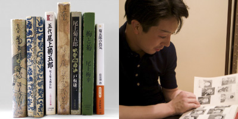

Books for Becoming Better Acquainted with Otowaya
The Onoe Kikugoro family is one of the leading families in the world of Kabuki and many critiques and stories based on personal interviews with the leading actors in this family over the generations have been published hitherto. The following section offers a guide to eight of the most important books on the Onoe Kikugoro family. We hope that it will be of use to people for whom this website has sparked an interest in Otowaya.
A few of the books referred to here are currently in print, but those that are not should be relatively easily accessible for reading or purchase at leading libraries or second-hand bookstores.

Onoe Kikugoro, Godai Onoe Kikugoro: Onoe Kikugoro Jiden (Autobiography of Onoe Kikugoro V)
Tales of the Kabuki Theatre from the Meiji Era
The foundations for the Kabuki theatre as it exists today were laid during the Meiji era. This book offers a vivid portrayal of Kikugoro V, who went in search of a new style of Kabuki for a new era while competing with the other greater Kabuki actor of the day, Ichikawa Danjuro IX. (continued)
| ↑ TOP |

Onoe Kikugoro VI, Gei (Art)
Discussing His Art
Gei, by Kikugoro VI, consists of three main sections Rokudaime no Shumei (Succession to the Name of Kikugoro VI), Ichimuraza Koshinkyoku (March of the Ichimura-za Troupe), and Enshutsu Kuden Showa (Tales of the Oral Transmission of Theatrical Production). (continued)
| ↑ TOP |

Toita Yasuji, Onoe Kikugoro
The Attractions of Kikugoro VI Portrayed with a Vivid Pen
This book is a critical biography of the Onoe Kikugoro house over the generations, although more than half of the text is given over to Kikugoro VI. It presents a vivid portrayal of the attractions of Kikugoro VI in the sophisticated and witty style for which Toita Yasuji was renowned. (continued)
| ↑ TOP |

Atsumi Seitaro, Rokudaime Kikugoro Hyoden (Critical Biography of Kikugoro VI)
A Vivid Record of the Career of Kikugoro VI
Several biographies have been written of Kikugoro VI, who was regarded as one of the greatest figures in theatrical history. His life and career are portrayed in detail in two books, Rokudaime Kikugoro Den (Biography of Kikugoro VI) by Hamamura Yonezo, which was published during the actor's lifetime, and the present volume, which offers a chronological depiction of his stage career. (continued)
| ↑ TOP |

Onoe Baiko VI, Ume no Shitakaze (The Wind Beneath the Plum Trees)
An Outstanding Memoir by a Kabuki Actor
The memoirs of Onoe Baiko VI are one of the most outstanding of all geidan, or memoirs written by Japanese performing artists. Another well-known example of a geidan written by an onnagata actor is Kaigyoku Yawa: Kabuki no Kata by Nakamura Utaemon V (Bunya Shobo, 1950). These two memoirs provide an invaluable record of the art of these two onnagata actors who lived and worked around the same time. (continued)
| ↑ TOP |

Onoe Baiko VII, Ume to Kiku (Plums and Chrysanthemums)
Conveying the Impression of a Man of Sincerity and Grace
This book vividly conveys the warm and endearing personality of Onoe Baiko VII, who, along with Nakamura Utaemon VI, was one of the two great onnagata performers of female roles during the Showa era. (continued)
| ↑ TOP |

Ohkura Shinji, Shichidaime Kikugoro no Shibai (The Theatre of Kikugoro VII)
A Lavish Collection of Photographs Tracing the Stage Performances of Kikugoro VII
This is a lavish collection of stage photographs of the present Kikugoro taken by Ohkura Shinji and published in 1989, the year marking the fortieth anniversary of the Kikugoro troupe. It consists of a total of 199 photographs taken over a period of around four and a half years between 1983 and 1988 depicting 56 works and 66 roles, with commentaries provided to each of the works by Watanabe Tamotsu. Four and a half years is by no means a short time for either a photographer or an actor being photographed. Looking at the photographs, one is astonished to realise once again how Kabuki actors are obliged to undertake such a large number of roles within such a short space of time. (continued)
| ↑ TOP |
Kikugoro VII: The Roots of Seductiveness and the Pressures of a Great Name
As the author states in his postface, this book offers a critique of the actor Kikugoro as well as providing a commentary to leading items in the Kabuki repertory. This is a book that can be enjoyed by everyone from readers already well acquainted with Kabuki and with Kikugoro to those who are still novices in the field of Kabuki. (continued)
| ↑ TOP |
Copyright © Otowaya All Rights Reserved.